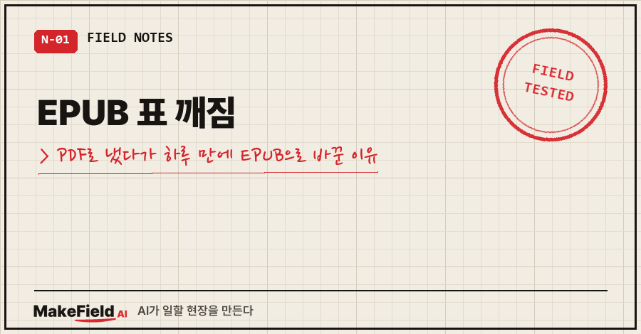
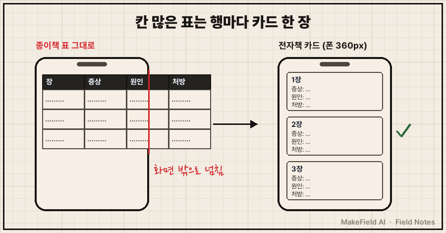
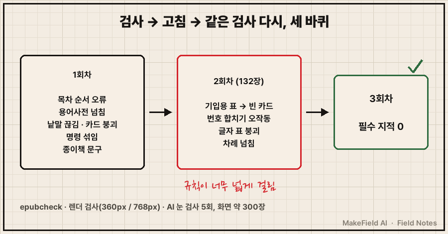
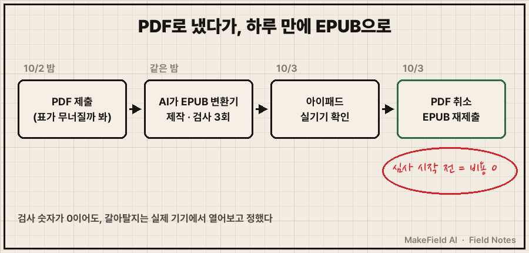

전자책 파일을 PDF로 제출했다가, 다음 날 제출을 취소하고 EPUB으로 다시 냈어요.
PDF를 고른 이유는 하나였습니다. EPUB 표 깨짐이 무서웠거든요. 438쪽짜리 원고에 표랑 코드 박스가 수백 개라서, 글자가 화면 폭에 맞춰 흘러내리는 EPUB에선 다 무너질 거라고 봤어요.
결론부터 말하면 그 걱정은 반만 맞았어요. 표를 그대로 옮기면 폰에서 깨지는 건 맞습니다. 그런데 칸이 많은 표를 '항목: 값' 카드로 바꾸는 규칙 하나를 넣으니 폰 폭 360px에서도 가로 넘침이 0이 됐어요. 하룻밤 사이 AI가 그 변환기를 만들었고, 다음 날 아이패드로 열어본 뒤 EPUB으로 갈아탔습니다.
공장 자동화 쪽에서 15년 일했고, 퇴근 후엔 개인 PC에서 AI랑 이것저것 만들어요. 이번엔 그게 책이었어요. 2026년 10월 2~3일에 있었던 일입니다.
1. 전자책 PDF와 EPUB, 뭐가 다른가요
PDF는 종이 한 쪽을 사진처럼 고정한 파일이고, EPUB은 화면 크기에 맞춰 글이 다시 흐르는(리플로우) 파일이에요. 차이는 폰에서 열어보면 바로 보입니다.
| EPUB | ||
|---|---|---|
| 화면 배치 | 종이 쪽 그대로 고정 | 화면 폭에 맞춰 다시 흐름 |
| 폰에서 읽기 | 확대·좌우 스크롤 반복 | 글자 크기 조절, 한 손으로 넘김 |
| 표·코드 | 종이 모양 그대로 | 넓으면 화면 밖으로 넘침 |
| 링크 | 쪽 번호 위주 | 장마다 바로 가는 링크 |
제 원고는 표가 정말 많았어요. 그래서 첫날 판단은 "PDF가 안전하다"였고, 실제로 PDF로 제출했습니다. 여기까진 틀린 판단은 아니었어요. 다만 그 판단 뒤에 "EPUB은 미리 만들어만 둬라"는 한 줄을 붙여서 AI한테 넘기고 잤어요.
2. EPUB 표 깨짐은 왜 생기나요
표가 깨지는 건 칸 수 × 글자 수가 폰 폭을 넘기 때문이에요. 폰 한 줄에 한글이 대략 24자 들어가는데, 4칸짜리 표에 칸마다 열 글자씩 들어가면 이미 넘칩니다. 그러면 표가 화면 밖으로 삐져나가거나, 낱말이 한 글자씩 세로로 끊겨요.
AI가 밤새 만든 변환기는 원고 마크다운 49개 파일을 직접 읽어서 EPUB을 만들었는데, 핵심은 표를 무조건 표로 두지 않는 거였어요.
CARD_MIN_COLS = 4 # 이 칸 수 이상인 표는 카드형으로
# 폰 폭(약 24자)에 들어가는 짧은 표는 표 그대로
fits = sum(min(w, 12) for w in widths) <= 24
# 독자가 채우는 기입용 표는 표 그대로
if cells and sum(1 for v in cells if not v.strip()) >= len(cells) / 2:
fits = True
if len(header) >= CARD_MIN_COLS and not fits:
... # 행마다 '항목: 값' 카드로 변환(실제 변환 스크립트에서 표 판정 부분만 발췌)
4칸 이상이고 폰 폭을 넘는 표만 카드로 바꿔요. 한 행이 카드 한 장이 되고, 카드 안에는 "항목: 값"이 세로로 쌓입니다. 2~3칸 표나 숫자만 짧게 든 표는 비교가 되게 표로 남겨요.

3. 바꾸는 건 표만이 아니었어요
종이를 전제로 쓴 문장과 장치도 전부 손봐야 했어요. 표보다 오히려 이쪽이 더 많았습니다.
| 요소 | 종이책 | 전자책 |
|---|---|---|
| 코드 박스 | 고정폭 정렬 | 화면 폭에서 줄 감김 |
| 본문의 "(1-2)" 같은 장 참조 | 그냥 글자 | 해당 장으로 가는 링크 723개 |
| "책 뒤 QR" 같은 문구 | 종이 문맥 | 누를 수 있는 링크로 치환 |
| 설치 명령 | 이름·명령 한 줄 정렬 | 이름과 명령 박스 분리 (복사할 때 안 섞이게) |
역슬래시 \ | 그대로 | 글꼴만 영문으로 (₩로 보이는 것 방지) |
| 목차 | 차례 쪽 | 기기 목차 부→장 2단계 + 차례 링크 |
설치 명령 분리는 1회차 검사에서 "명령 섞임"으로 걸렸어요. 종이에선 도구 이름과 명령이 한 줄에 가지런히 놓이는데, 폰에서 줄이 감기니 둘이 한 덩어리로 보였거든요. 그대로 복사하면 명령에 이름까지 섞일 수 있는 상태였어요. 종이에선 생길 일이 없는 문제죠.
4. 검사는 세 겹으로 돌렸어요
기계 검사 두 개와 눈 검사 하나를 겹쳐 돌렸고, 한 바퀴로는 안 끝났어요.
첫째, 공식 검사기 epubcheck예요. EPUB 형식이 규격에 맞는지 보는 도구이고, 전자책 유통사 상당수가 이걸 통과한 파일만 받습니다. 자바가 필요한데, 관리자 권한 없이 사용자 폴더에 JRE를 깔고 pip --user로 epubcheck를 설치해서 돌렸어요.
java -jar epubcheck.jar 전자책.epub둘째, 렌더 검사예요. 풀어놓은 EPUB 문서 66개를 크롬으로 폰 폭(360px)과 태블릿 폭(768px)에서 하나씩 열어, 화면 밖으로 넘친 요소·깨진 링크·안 뜨는 이미지를 셌어요.
셋째, 눈 검사예요. 화면을 캡처해서 AI 검사 에이전트한테 "이상한 데 찾아라"를 시켰습니다. 5번 돌렸고 화면이 약 300장 나왔어요.

재밌는 건 2회차였어요. 1회차 지적을 다 고쳤는데, 같은 검사를 다시 돌리니 못 보던 문제가 또 나왔거든요. 둘 다 규칙이 너무 넓게 걸린 경우였어요.
독자가 직접 점수를 적는 빈칸 채점표가 카드로 바뀌면서 빈 카드가 됐어요. 칸이 4개라 규칙에 걸린 거죠. 그래서 "빈칸이 절반 이상이면 표 그대로" 예외가 생겼습니다.
또 하나는 번호 합치기였어요. 첫 칸이 1, 2, 3이면 다음 칸과 합쳐 카드 제목으로 쓰게 했는데, 첫 칸에 결과값 0이나 에러 코드 267009가 든 표까지 합쳐버렸어요. 숫자면 다 순번인 줄 안 거죠. "1부터 차례로 올라갈 때만"으로 조건을 좁혔습니다.
epubcheck 5.3.0 결과 치명 0 · 오류 0 · 경고 0
폰(360px)·태블릿(768px) 66개 문서 가로 넘침 0, 깨진 링크 0
원고 49개 파일 대비 문장·표 행·코드 줄 누락 0건(검토 보고서 결론 원문 — 3회차 기준)
5. 마지막 판단은 아이패드 한 대였어요
검사 숫자가 다 0이어도, EPUB으로 갈아탈지는 실제 기기에서 열어보고 정했어요.
다음 날, 아이패드 도서 앱으로 열었더니 두 쪽이 나란히 뜨더라고요. 순간 깨진 줄 알았는데 앱이 화면 크기 보고 알아서 하는 기능이었어요. '스크롤 보기'로 바꾸니 한 단으로 쭉 흘렀습니다.
그걸 보고 제가 한 말이 "EPUB이 좋아 보인다"였어요.
마침 PDF판은 심사가 아직 시작 전이었어요. 그래서 PDF 제출을 취소하고, 같은 초안에 EPUB을 올려 새로 심사를 요청했습니다. 비용은 0원이었고요. 승인 후에 파일만 교체해서 형식을 바꿀 수 있는지는 확인 못 했어요. 확실한 길이 앞에 있어서 그쪽으로 간 거예요.
남은 숙제도 솔직히 적어둘게요.
- 국내 전자책 앱 3종에서는 아직 안 열어봤어요. 검사는 PC 크롬 기준이에요
- "A → B → C"처럼 화살표로 이은 한 줄 도식은 폰에서 중간에 꺾여요
- 본문의 "위 표"라는 말이 카드로 바뀐 표를 가리키는 곳이 몇 군데 남았어요

6. 미리 답해둘게요
Q. 표가 많은 책이면 그냥 PDF가 낫지 않나요?
폰 독자를 생각하면 아니라고 봐요. PDF는 표가 안 깨지는 대신 모든 쪽을 확대해서 읽어야 하거든요. 표가 많을수록 칸 많은 표만 카드로 바꾸는 규칙이 더 값어치 있습니다.
Q. EPUB 표 깨짐, 변환 프로그램 없이 확인할 방법이 있나요?
EPUB은 사실 압축 파일이라, 확장자를 zip으로 바꿔 풀면 안에 웹 문서(xhtml)가 들어 있어요. 그걸 크롬에서 열고 개발자 도구로 폭을 360px에 맞추면 폰에서 어떻게 보일지 거의 그대로 보입니다. 제 렌더 검사도 이 방식이에요.
Q. AI한테 맡기면 한 번에 끝나나요?
저는 세 바퀴 걸렸어요. 1회차를 다 고쳤는데도 2회차에 새 지적이 나왔고요. 그래서 "검사 → 고침 → 같은 검사 다시"를 한 묶음으로 맡기는 게 중요했어요.
종이책을 만들 땐 표가 많을수록 든든했는데, 전자책에선 그게 제일 큰 숙제였어요. 원고는 하나인데 읽히는 화면이 다르면 다른 물건이 되더라고요. 여러분은 AI가 만들어준 결과물을, 실제로 읽힐 화면에서 한 번 열어보고 내보내시나요?
손으로 하던 일을 AI랑 같이 굴린 기록은 makefield.ai에 차곡차곡 모아두고 있어요.
태그: #EPUB표깨짐 #전자책PDFEPUB차이 #전자책만들기 #EPUB만들기 #epubcheck #전자책리플로우 #전자책표 #자가출판 #전자책출간 #POD출판 #AI로책만들기 #AI자동화 #클로드코드 #현장엔지니어AI #MakeFieldAI